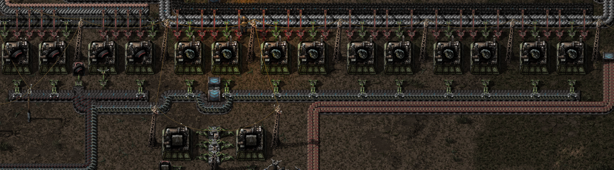
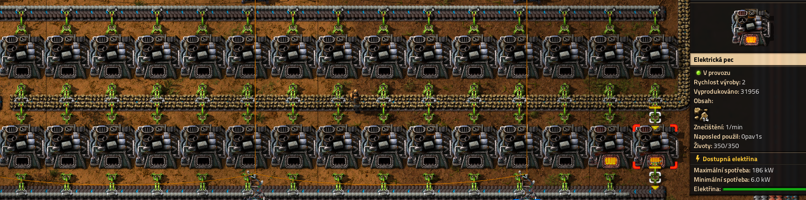
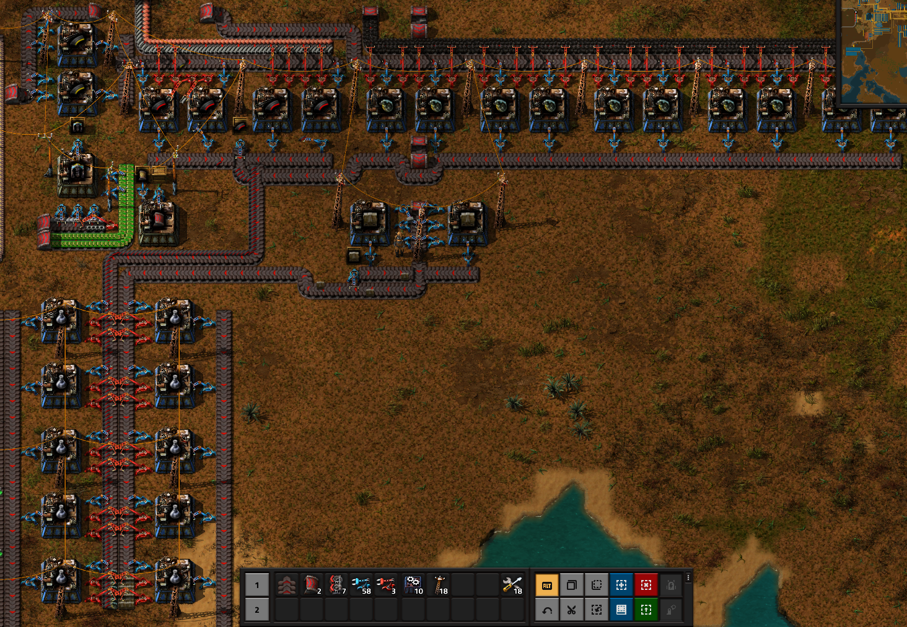
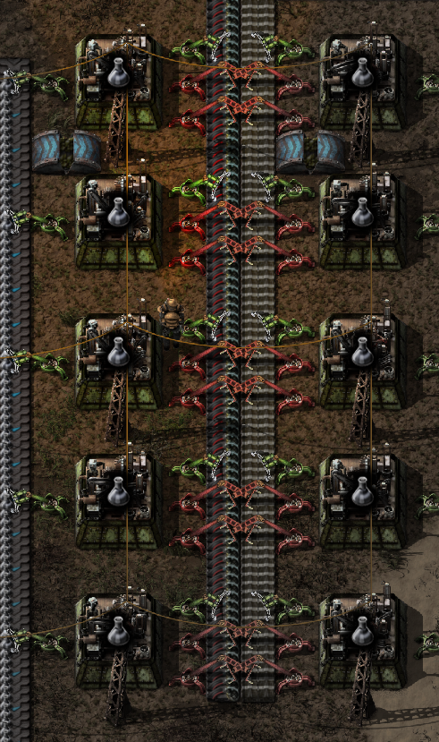
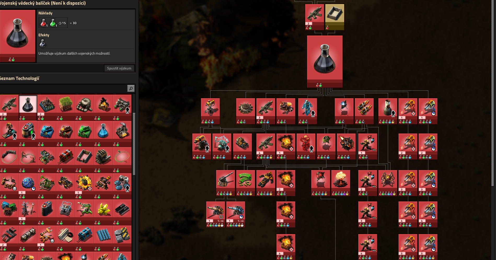
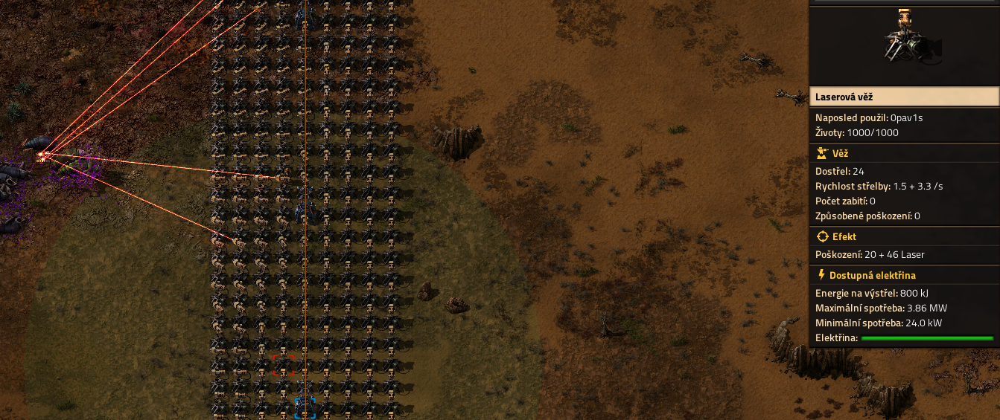
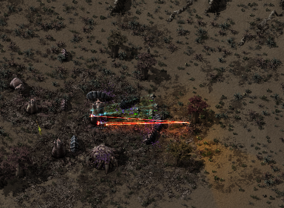
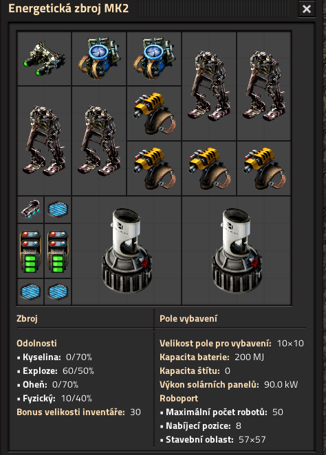
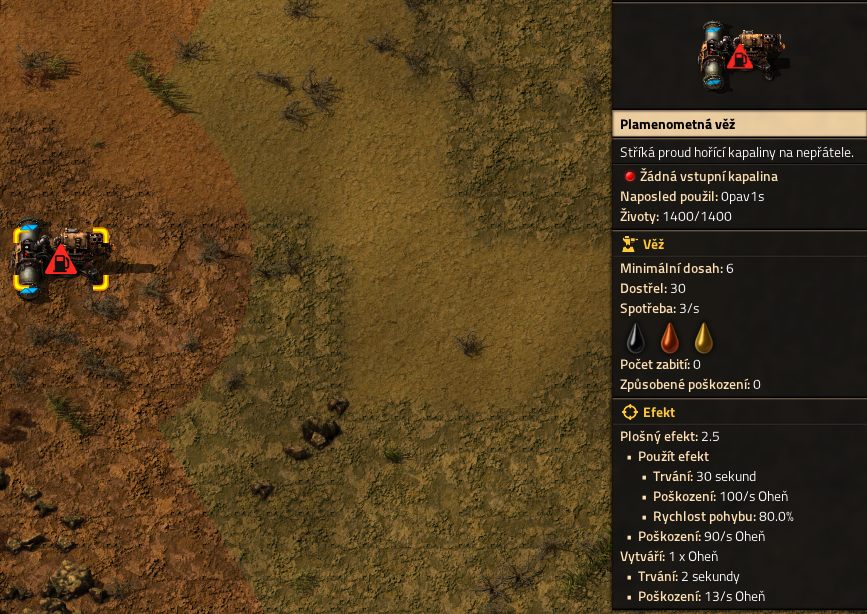
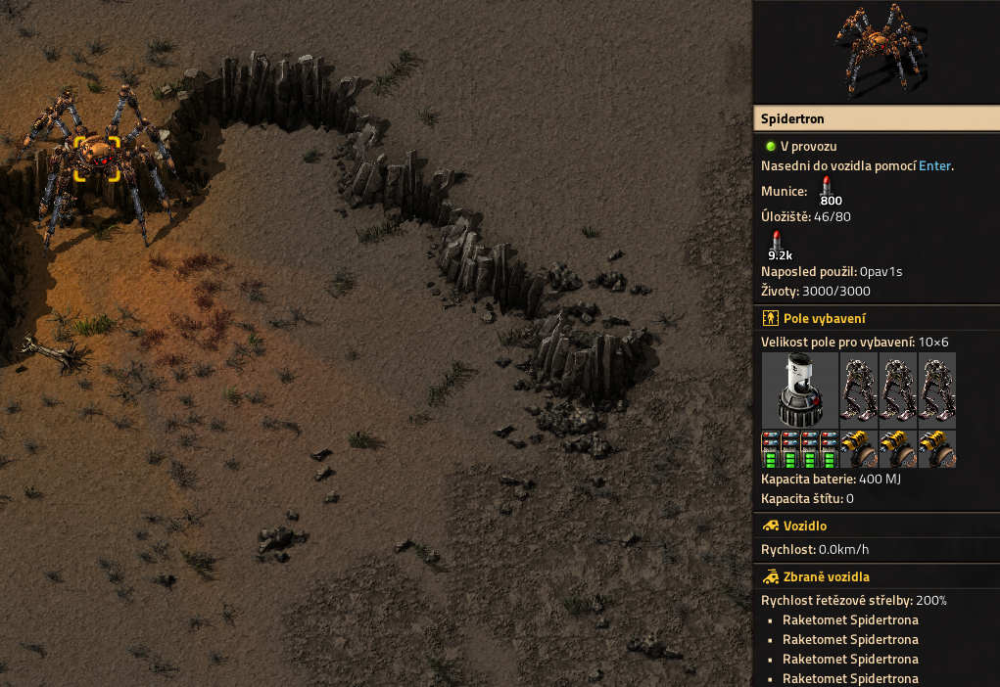

Vojenský vědecký balíček
Vojenský vědecký balíček není potřeba k dohrání hry ale zaručeně ho oceníte pokud hraje s nepřátely protože otevírá zcela novou cestu k vyjednávání s nepřítelem otevírá obrané roboty plamenometné a laserové věže, energetické zbroje, tank a vozítko Spidertron. Výroba balíku není složitá ale bude potřeba nová surovina ocel a také bude potřeba kamená cihla což je jenom přepálený kámen z pece.
Ukázka výroby surovin a výroby samotného balíčku
Obrázek ukazuje pokročilou výrobu gránátů, zdí a nábojů která se dá použít i bez pokročilých výzkumů
{kind=link}
Obrázek ukazuje elektrické pece na kamené cihly, bez pokročilých výzkumů se musí používat pece na tuhé paliva
{kind=link}
Obrázek ukazuje výrobu vojenského balíčku a příslušenství bez pokročilého výzkumu
{kind=link}
Obrázek ukazuje výrobu vojenského balíčku s pokročilým výzkumem
{kind=link}
Obrázek ukazuje výzkumný strom vojenského balíčku
{kind=link}
Co vše získáte jeho výzkumem
Obrázek ukazuje laserové věže v boji proti vyvinutému nepříteli
{kind=link}
Obrázek ukazuje obrané roboty a laserovou ochranu zbroje v akci proti nepříteli
{kind=link}
Obrázek ukazuje největší zbroj ve hře plus vybavení které v ní je
{kind=link}
Obrázek ukazuje tank po boji s nepřítelem

Obrázek ukazuje jak vypadá a co potřebuje ke svému provozu plamenometná věž
{kind=link}
Obrázek ukazuje vozítko spidertron s vybavením co má usebe
{kind=link}
Obrázek ukazuje výbuch atomové bomby na stejném místě kde byl spidertron v předchozím obrázku